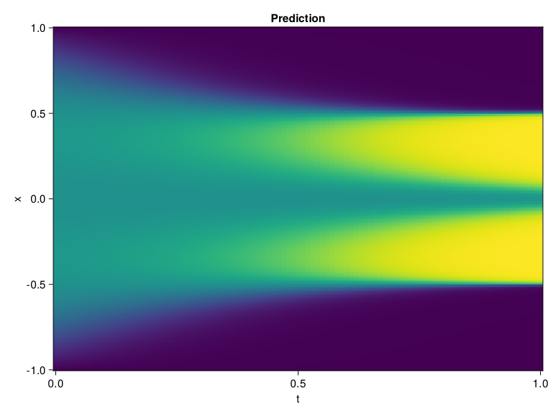

Allen-Cahn Equation with Sequential Training
In this tutorial we are going to solve the Allen-Cahn equation with periodic boundary condition from $t=0$ to $t=1$. The traning process is split into four stages, namely $t\in [0,0.25]$, $t\in [0.0,0.5]$, $t\in [0.0,0.75]$ and $t\in [0.0, 1.0]$.
using ModelingToolkit, IntervalSets
using Sophon
using Optimization, OptimizationOptimJL
@parameters t, x
@variables u(..)
Dₓ = Differential(x)
Dₓ² = Differential(x)^2
Dₜ = Differential(t)
eq = Dₜ(u(x, t)) - 0.0001 * Dₓ²(u(x, t)) + 5 * u(x,t) * (abs2(u(x,t)) - 1.0) ~ 0.0
domain = [x ∈ -1.0..1.0, t ∈ 0.0..0.25]
bcs = [u(x,0) ~ x^2 * cospi(x),
u(-1,t) ~ u(1,t)]
@named allen = PDESystem(eq, bcs, domain, [x, t], [u(x, t)])\[ \begin{align} - 0.0001 \frac{\mathrm{d}^{2}}{\mathrm{d}x^{2}} u\left( x, t \right) + 5 \left( -1.0 + \left|u\left( x, t \right)\right|^{2} \right) u\left( x, t \right) + \frac{\mathrm{d}}{\mathrm{d}t} u\left( x, t \right) =& 0.0 \end{align} \]
Then we define the neural net, the sampler, and the training strategy.
chain = FullyConnected(2, 1, tanh; hidden_dims=16, num_layers=4)
pinn = PINN(chain)
sampler = QuasiRandomSampler(500, (300, 100))
strategy = NonAdaptiveTraining(1, (50, 1))
prob = Sophon.discretize(allen, pinn, sampler, strategy)OptimizationProblem. In-place: true
u0: ComponentVector{Float64}(layer_1 = (weight = [-1.778913974761963 -0.9935409426689148; 1.168370008468628 0.7763652205467224; … ; -0.04869326949119568 -1.2452558279037476; 1.092573881149292 0.5611422657966614], bias = [0.0; 0.0; … ; 0.0; 0.0;;]), layer_2 = (weight = [-0.48017099499702454 -0.15299490094184875 … -0.37369105219841003 0.19980855286121368; -0.004163513425737619 -0.10115844756364822 … -0.23138044774532318 0.6847789287567139; … ; -0.6432366967201233 -0.07996784895658493 … 0.43717190623283386 0.3253591060638428; 0.6745344996452332 -0.03894646465778351 … -0.4277573525905609 0.40188679099082947], bias = [0.0; 0.0; … ; 0.0; 0.0;;]), layer_3 = (weight = [0.37728777527809143 -0.5062521696090698 … 0.10982245951890945 -0.47472432255744934; 0.5383750200271606 -0.6267554759979248 … -0.315509557723999 -0.6040832996368408; … ; 0.6027182340621948 -0.7127053737640381 … 0.5241642594337463 0.06311264634132385; -0.5036371946334839 -0.6893362998962402 … 0.31765589118003845 0.17444497346878052], bias = [0.0; 0.0; … ; 0.0; 0.0;;]), layer_4 = (weight = [-0.6339418888092041 -0.018250202760100365 … -0.14208605885505676 -0.020852064713835716; -0.4625665545463562 0.1538282036781311 … -0.29139378666877747 -0.4140436053276062; … ; 0.03582135587930679 0.015385771170258522 … 0.6775516271591187 -0.25877678394317627; -0.6538805365562439 -0.6147429347038269 … -0.19880782067775726 -0.5191970467567444], bias = [0.0; 0.0; … ; 0.0; 0.0;;]), layer_5 = (weight = [-0.12337282299995422 0.6735426187515259 … 0.5452236533164978 -0.3758215308189392], bias = [0.0;;]))We solve the equation sequentially in time.
function train(allen, prob, sampler, strategy)
bfgs = BFGS()
res = Optimization.solve(prob, bfgs; maxiters=2000)
for tmax in [0.5, 0.75, 1.0]
allen.domain[2] = t ∈ 0.0..tmax
data = Sophon.sample(allen, sampler, strategy)
prob = remake(prob; u0=res.u, p=data)
res = Optimization.solve(prob, bfgs; maxiters=2000)
end
return res
end
res = train(allen, prob, sampler, strategy)u: ComponentVector{Float64}(layer_1 = (weight = [-2.726687019996095 -1.1912462834064668; 0.8469117037649369 1.3806146287374574; … ; 0.059199966924760976 -1.169457169572563; 1.7183596681105873 0.6007704098483039], bias = [0.02670267000568693; -1.0597509034248302; … ; -0.04027619621603369; -0.9839096250610717;;]), layer_2 = (weight = [-0.29112222454334086 0.18045133249838605 … -0.46323528030742667 0.8504074248321055; -0.1807293902692051 -0.007232210809384011 … -0.09600544410529961 0.8052127993271393; … ; -1.548241345934109 0.6634648051007269 … 0.6018727535525871 0.4034790897196065; 0.7326932547154889 0.1817866182724866 … -0.4365857492842338 0.5003866972668118], bias = [0.044886221929529235; 0.1482076969436883; … ; 0.2796268599516139; -0.0325075853208361;;]), layer_3 = (weight = [0.4224645321178253 -0.3884950873718648 … 0.19106632328665527 -0.2676354585213115; 0.7924677839106159 -0.5438164404090883 … -0.27050007026263234 -0.9644536522818923; … ; 0.1883116205192008 -0.7396502219713054 … 0.24269033799212084 0.08764679343575457; -0.40849287622083236 -0.4493648958094756 … 0.1193332202119619 0.21558922480762494], bias = [0.7596849378615259; -0.12878486587045695; … ; -0.4192832332183888; 0.9336056775795107;;]), layer_4 = (weight = [-0.5704836641447815 -0.38741461320843557 … -0.2007758054494513 0.07167884247929593; -0.6432679542576687 0.46411351395267014 … -0.014096567817082127 -0.32180222498740724; … ; 0.39087587251744904 -0.4181896030189312 … 0.28456235602750385 -0.47976231434719435; -0.19050673285175285 -1.501002320415832 … 0.1853648413560043 -0.8479492023879563], bias = [0.3983383025808209; -0.5716367984843789; … ; -0.334775630262353; 0.026357138331916292;;]), layer_5 = (weight = [-0.31962586413391453 0.358399238207427 … 0.43174894351768955 -0.5697464285677727], bias = [-0.33325782085849515;;]))Let's plot the result.
using CairoMakie
phi = pinn.phi
xs, ts = [infimum(d.domain):0.01:supremum(d.domain) for d in allen.domain]
axis = (xlabel="t", ylabel="x", title="Prediction")
u_pred = [sum(pinn.phi([x, t], res.u)) for x in xs, t in ts]
fig, ax, hm = heatmap(ts, xs, u_pred', axis=axis)